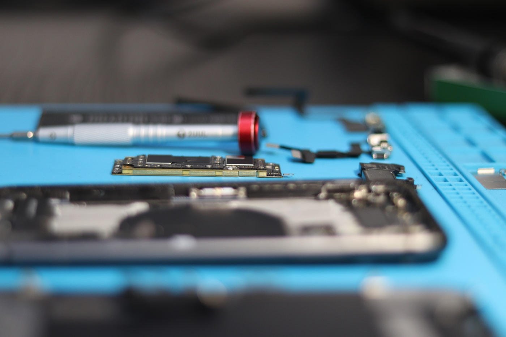

Service areas
Phone repair enquiries across Brisbane Northside
This sample uses a realistic northside suburb footprint. A real buyer should replace this list with their actual shop, pickup or mobile service coverage.
ChermsideNundahNorthgateAspleyKedronStaffordEverton ParkNorth LakesMango HillVirginiaBanyoGeebung

Local intent
Suburb pages can be added after a real location is confirmed
The current sample keeps service-area wording broad because there is no verified shop address yet. Once sold, local landing pages can be added for the strongest suburbs.